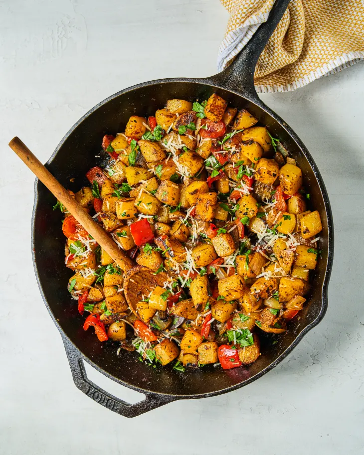

Ingredients
- 2 Yukon Gold Potatoes
- 1 Small Yellow Onion
- 1 small red bell pepper
- 4 cloves garlic
- ½ small bunch fresh parsley
- 1 ounce Parmesan cheese, finely grated (about ½ cup), plus more for serving
- 2 tablespoons olive oil
- 2 tablespoons unsalted butter
- ½ teaspoon freshly ground black pepper, plus more as needed
- 1 ½ teaspoons salt, divided, plus more as needed
- ½ teaspoon sweet paprika
Description
This American Classic breakfast hash dish is the perfect filling meal to get your day started right!
Recipe credits:
Steps
- Dice 2 pounds Yukon Gold potatoes into ½-inch cubes. Place in a medium saucepan, add ½ teaspoon of the kosher salt, and cover with cool water by at least 1 inch. Bring to boil over medium-high heat. Reduce the heat as needed and simmer until just tender, 7 to 8 minutes.
- Drain the potatoes. Transfer to a baking sheet and spread out into a single layer to air dry. Meanwhile, dice 1 small yellow onion (about 1 cup). Dice 1 small red bell pepper (about 1 cup). Finely mince 4 garlic cloves (about 1 heaping tablespoon). Coarsely chop fresh parsley leaves until you have ½ cup. Finely grate 1 ounce Parmesan cheese (about ½ cup), plus more for serving.
- Heat 2 tablespoons olive oil and 2 tablespoons unsalted butter in a large, heavy-bottomed skillet over medium-high heat until shimmering. Add the onion and bell pepper and cook until beginning to soften, about 3 minutes. Add the potatoes and season with the remaining ½ teaspoon salt and ½ teaspoon black pepper. Cook, stirring occasionally, until the potatoes, onion, and bell pepper are browned in spots, about 5 minutes. (This will depend on the size of your skillet. If the vegetables aren’t browning after a few minutes, increase the heat to high.) Add the garlic and stir until fragrant and light golden-brown, about 1 minute.
- Remove the skillet from the heat. Add the parsley, Parmesan, and ½ teaspoon sweet paprika, and stir to combine. Taste and season with more kosher salt and black pepper as needed. Sprinkle with more Parmesan before serving.